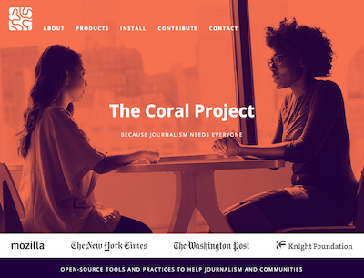

Welcome to the Coral Project documentation!
This site aims to familiarize you with the Coral Project, how it works, and how you can help.

What is the Coral Project?
The Coral Project is an open source project to help publishers of all sizes build better communities around their journalism. We’re creating tools that allow everyone feel safe, respected, and heard. It consists of three products: Ask, Trust and Talk.
Sign up for the Coral Project newsletter to stay tuned for announcements, software updates and the on community engagement Guides for newsrooms. Our product roadmap.
If you’d like to learn more about the Coral Project from a high-level perspective, please visit our Coral Project website. You can find information there about the project, our goals, and the individual products.
Who Can Benefit?
We’ve designed our products to meet essential needs of journalism through effective online communities.
Publishers
- Increase engagement, loyalty and user satisfaction
Editors
- Custom comment moderation dashboards, find great contributors and reduce spam submissions
Journalists
- Find potential story sources, high quality interactions and curate audience engagement
Community Members
- Control your commenting experience, interact with journalists and avoid harassment
How the docs are organized
The documentation is organized into sections based on what you want to do with Coral.
- The Developer Guide section contains information geared towards a technical audience: those who want to install Coral, those who want to learn about how the various components of Coral fit together,
- The User Guide section contains information geared towards a less-technical audience. It has overviews and tutorials for those who want to use the Coral products like Trust, Ask, and Talk. If you’re a publisher, moderator, journalist, or reader who wants to learn how to use Coral, this section is for you.
- The Contribute section contains information for those who want to contribute to the Coral Project. You don’t have to be a developer to contribute! There are a number of ways you can help out, which are outlined on the Introduction page.
Guides
Strong community is about more than software. Our guides will help everyone in the newsroom be intentional about their community choices, whatever technology you use. We are currently covering these issues on our blog; the complete guides will be released in Q1 2017.
How can I contribute?
We want your ideas, your requests, your experiences, your bug reports, your skills, your code. Join our community of contributors.
Learn more
For more information about us and to see our blog, please visit our website and sign up to our newsletter. We are also on Twitter.
The Coral Project is a collaboration between The Mozilla Foundation, The New York Times, and The Washington Post, and is funded by a grant from The John S. and James L. Knight Foundation.